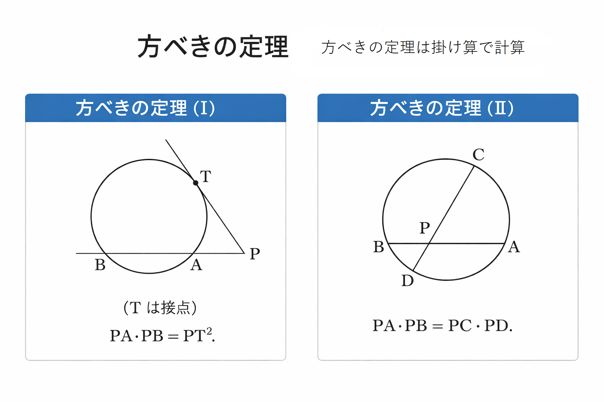
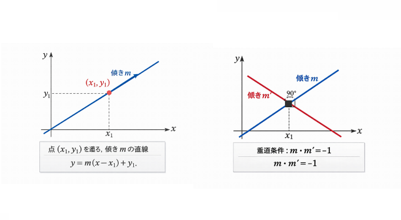
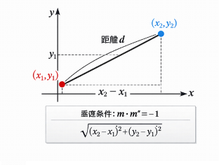
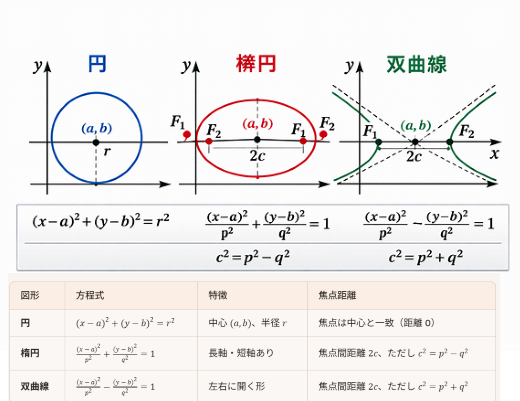
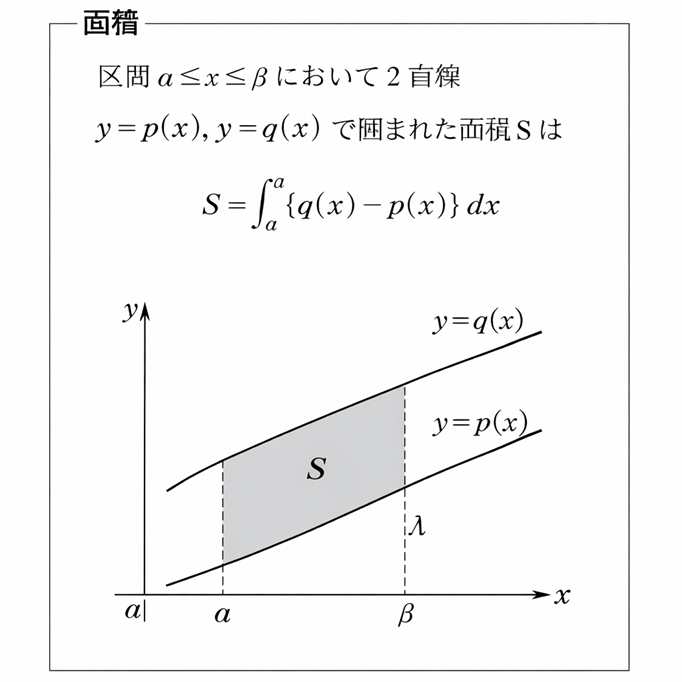
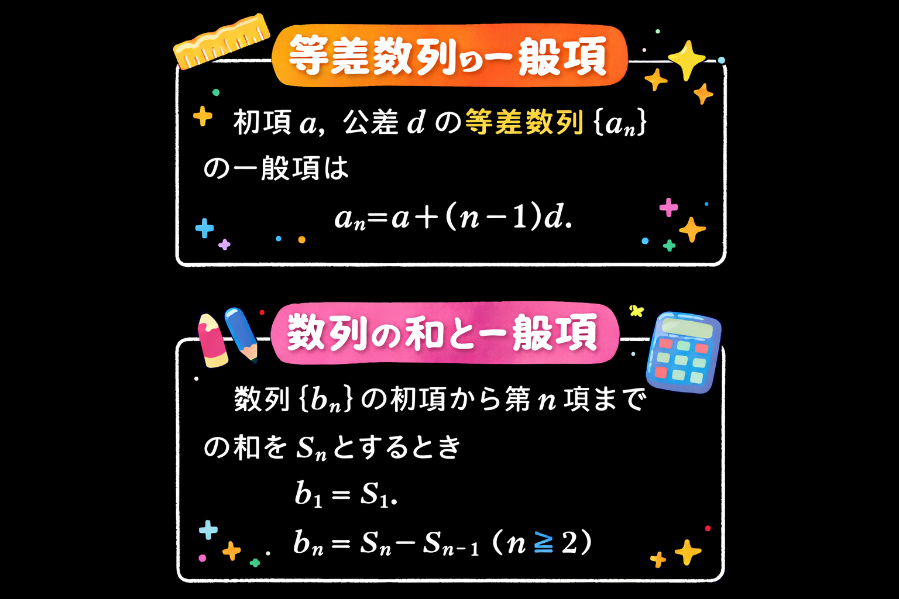
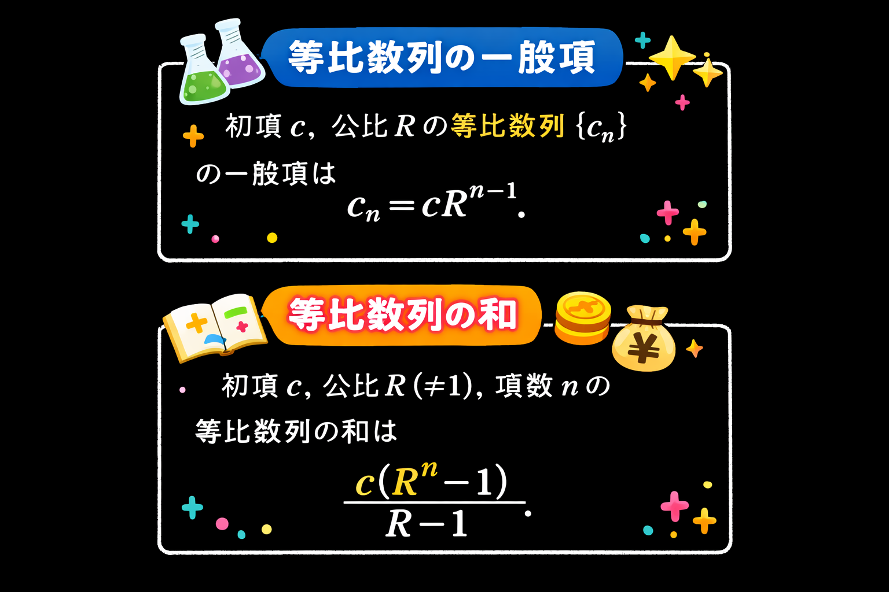
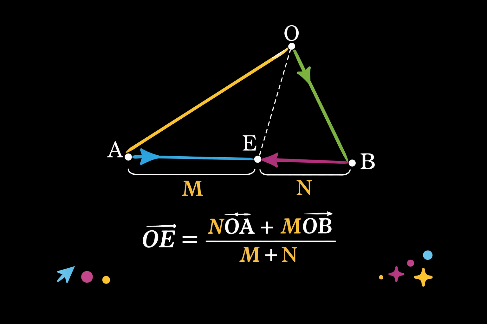

接線と割線、弦の交点で成立する積の関係。

y = m(x - x₁) + y₁
m*m'=-1

√((x₂ - x₁)² + (y₂ - y₁)²)

(x - a)² + (y - b)² = r²

y = g'(t)(x - t) + g(t)
T = ∫(g(x) - h(x)) dx

aₙ = a + (n - 1)d

和 = c(Rⁿ - 1)/(R - 1)

OE = (n·OA + m·OB)/(m + n)
